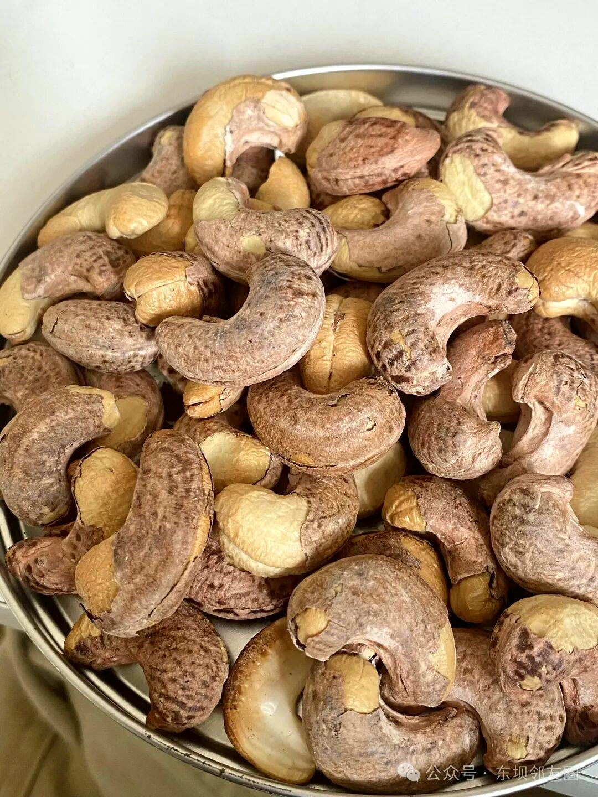
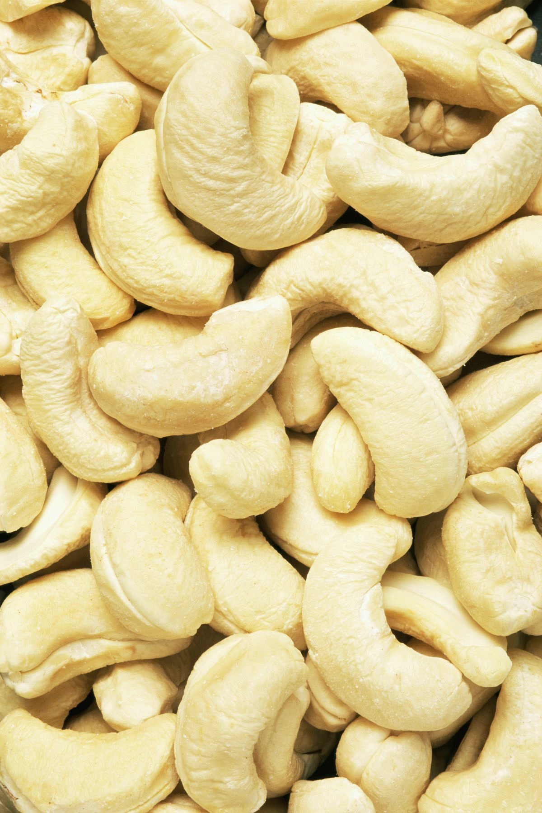
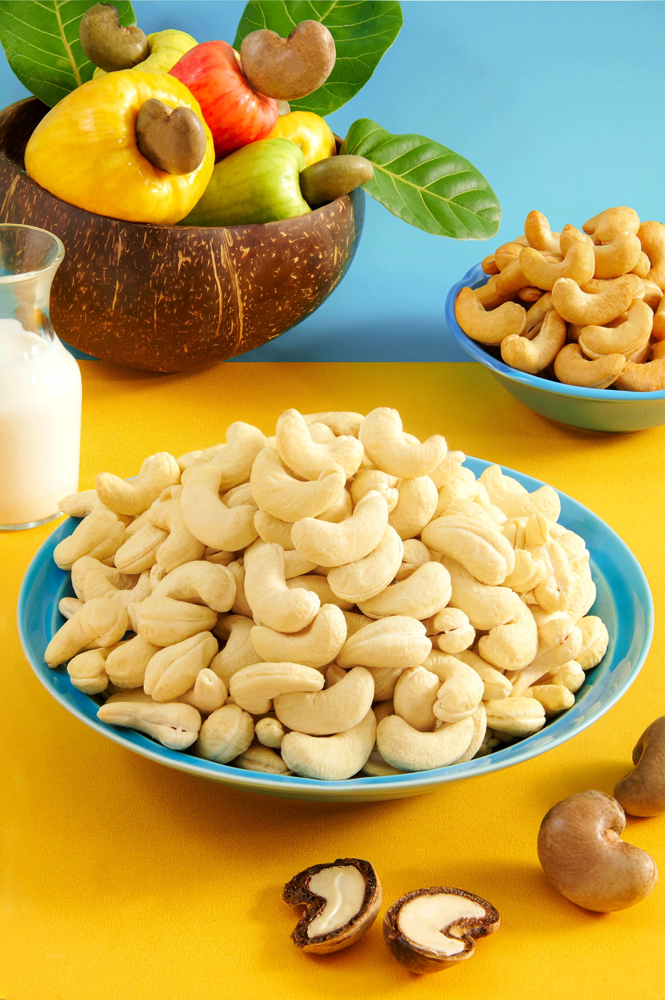
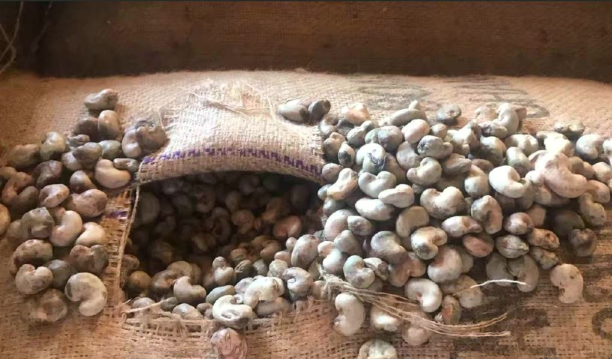
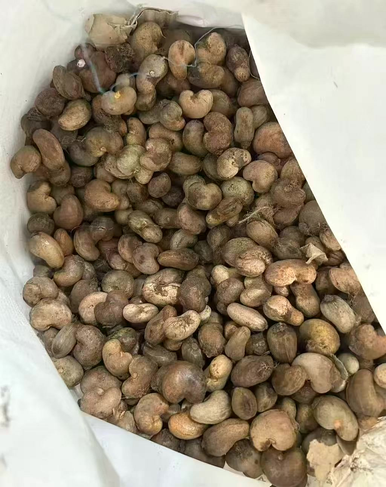
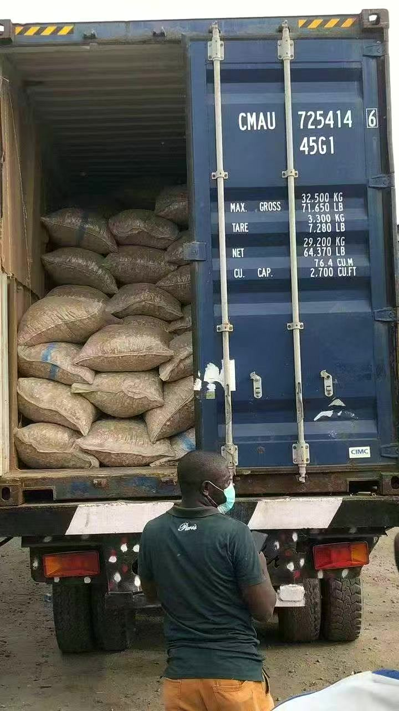

Discover our cashews.走近我们的腰果品类
Skin-on kernels. White kernels. Raw in-shell cashews. Explore each product and its supply route.紫衣、白腰果、带壳原料。了解每一类产品的规格、形态与供应路线。
Explore the collection探索腰果品类 ↓
Distinctive skin.
Natural character.紫衣腰果
保留果仁本色
Cashew kernels with their skin retained. The photograph shows the skin-on appearance; the grade of each shipment is confirmed against your order.保留种皮的腰果仁。照片展示带皮外观，具体批次等级按订单确认。
- Processing加工地
- Vietnam越南
- Sales destination销售去向
- Imported into China进口回中国销售


A clear view.
Of every kernel.白腰果
细看每一颗果仁
White Whole (WW) refers to whole white cashew kernels. Select from the confirmed grades below.WW 是 White Whole 的缩写，指整粒白腰果仁。下列为已确认的供应规格。
- Processing加工地
- Vietnam越南
- Sales destination销售去向
- Imported into China进口回中国销售



From West Africa.
For Vietnam.西非带壳原料
专供越南市场
Raw in-shell cashews for further processing in Vietnam. This supply line is sold to Vietnam only.供应越南后续加工的带壳生腰果原料。本产品仅销往越南。
- Raw material grade原料等级
- Mixed grade统级果
- Kernel reference开壳后参考
- Mainly 240 / 320; actual yield and grade confirmed per lot.主要为 240 / 320 生腰果规格，实际出仁情况按批次确认。
Tell us what you need.告诉我们你的采购需求
Kernel packing: 20/30 kg cartons with vacuum-sealed inner bags; MOQ 500 cartons. Raw in-shell packing and quantity confirmed per order.腰果仁包装：20/30 kg 纸箱，内装独立抽真空密封袋，起订量 500 箱。带壳原料包装及数量按订单确认。
FOB exports: full payment before loading. Typical lead time within one month; all details confirmed per order.出口 FOB，装船前收齐全款。常见交期一个月内，具体条款按订单确认。